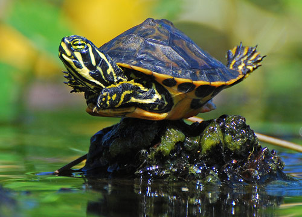
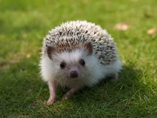

My Pets
The pets I own right now...
- Dog
- Turtle
- Hedgehog
 |
 |
 |
- My dog's name is Deuce. He is a lab and boxer mix. He was the runt of the litter, and now he weighs more than I do. He is almost nine years old, but still loves to play and run around.
- My turtle's name is Petey. He was the size of a quarter when we got him four years ago in Florida. Now, he is the size of my hand.
- My hedgehog's name is Belle. She was a Christmas present from my sister to me. When we first got her, she was really white, and now she is more brown.
I used to have a lot of pets until I had to get rid of most of them, because there were "too many," even though you can never have too many animals. I've had a various amount of house pets such as turtles, hedgehogs, dogs, cats, guinea pigs, bunnies, lizards, birds, and pigs. My favorite animal that I've ever had, is probably my pig. He was a black, micro pig that my sister got me for my birthday in 2014.